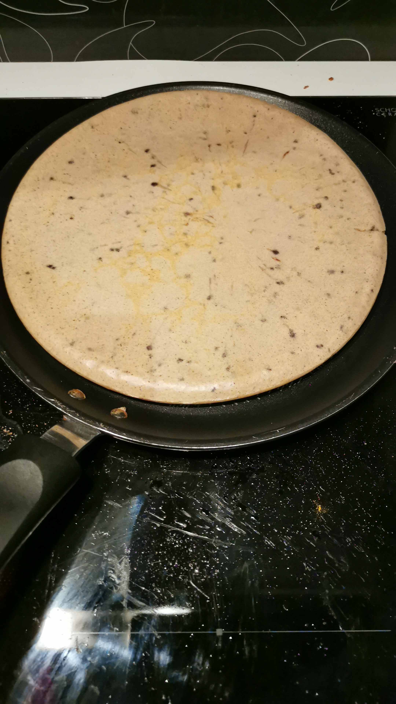

The PPP (Perfect Protein Pancake)

Description
When I was a student, I often had to walk and travel long distance to go to the university. Sometimes under an heavy sun, sometimes under a floody rain, crossing cities on my way. As such, I always needed to get a lot of energy right in my morning
This is where was born the PPP. The PPP, which stands for Perfect Protein Pancake, is the ideal way to get a big bunch of protein, lipids and carbs before the whole world is even woke up.
Ingredients
- 2 eggs
- 50g of milk/greek yogurt (maybe even water)
- 25g of honey
- 25g of chocolate whey protein
- 50g of all-uses flour
- 10g of chocolate chips
Optionnal
- 1 tbs of cinnamon
- 3g of unflavored creatine
Steps
- In a bowl, mix the 2 eggs
- Add the milk
- Add the honey and mix well
- Add the flour, and the cinnamon if wanted
- Add the chocolate whey protein, and the creatine if wanted
- Finally, add the chocolate chips
- Pour the bowl in a low-heat pan
- Cover, and let cook until the coagulation of the surface
- Now you have to flip the pancake, good luck
- Let the other side cook for a minute and serve